에너지관리기사 (2017-05-07 기출문제)
1과목: 연소공학
1. 액체연료의 미립화 시 평균 분무입경에 직접적인 영향을 미치는 것이 아닌 것은?
- 액체연료의 표면장력
- 액체연료의 점성계수
- 액체연료의 탁도
- 액체연료의 밀도
(정답률: 89%)

2. 연돌의 통풍력은 외기온도에 따라 변화한다. 만일 다른조건이 일정하게 유지되고 외기 온도만 높아진다면 통풍력은 어떻게 되겠는가?
- 통풍력은 감소한다.
- 통풍력은 증가한다.
- 통풍력은 변화하지 않는다.
- 퉁풍력은 증가하다 감소한다.
(정답률: 73%)
3. 집진장치 중 하나인 사이클론의 특징으로 틀린 것은?
- 원심력 집진장치이다.
- 다량의 물 또는 세정액을 필요로 한다.
- 함진가스의 충돌로 집진기의 마모가 쉽다.
- 사이클론 전체로서의 압력손실은 입구 헤드의 4배 정도이다.
(정답률: 77%)
4. 증기운 폭발의 특징에 대한 설명으로 틀린 것은?
- 폭발보다 화재가 많다.
- 연소에너지의 약 20% 만 폭풍파로 변한다.
- 증기운의 크기가 클수록 점화될 가능성이 커진다.
- 점화위치가 방출점에서 가까울수록 폭발위력이 크다.
(정답률: 84%)
5. 보일러의 열정산 시 출열에 해당하지 않는 것은?
- 연소배가스 중 수증기의 보유열
- 불완전연소에 의한 손실열
- 건연소배기가스의 현열
- 급수의 현열
(정답률: 78%)
6. 연소를 계속 유지시키는데 필요한 조건에 대한 설명으로 옳은 것은?
- 연로에 산소를 공급하고 착화온도 이하로 억제한다.
- 연료에 발화온도 미만의 저온 분위기를 유지시킨다.
- 연료에 산소를 공급하고 착화온도 이상으로 유지한다.
- 연료에 공기를 접촉시켜 연소속도를 저하시킨다.
(정답률: 88%)
7. 비중이 0.8(60℉/60℉)인 액체연료의 API도는?
- 10.1
- 21.9
- 36.8
- 45.4
(정답률: 38%)
8. 다음의 혼합 가스 1 Nm3의 이론 공기량(Nm3/Nm3)은? (단, C3H8 : 70%, C4H10 : 30%이다.)
- 24
- 26
- 28
- 30
(정답률: 55%)
9. 액체연료 연소장치 중 회전식 버너의 특징에 대한 설명으로 틀린 것은?
- 분무각은 10~40° 정도이다.
- 유량조절범위는 1 : 5정도이다.
- 자동제어에 편리한 구조로 되어있다.
- 부속설비가 없으며 화염이 짧고 안정한 연소를 얻을 수 있다.
(정답률: 71%)
10. 일반적인 천연가스에 대한 설명으로 가장 거리가 먼 것은?
- 주성분은 메탄이다.
- 발열량이 비교적 높다.
- 프로판가스보다 무겁다.
- LNG는 대기압 하에서 비등점이 –162℃ 인 액체이다.
(정답률: 78%)
11. 200 kg의 물체가 10m의 높이에서 지면으로 떨어졌다. 최초의 위치 에너지가 모두 열로 변했다면 약 몇 kcal의 열이 발생하겠는가?
- 2.5
- 3.6
- 4.7
- 5.8
(정답률: 47%)
12. 연료의 발열량에 대한 설명으로 틀린 것은?
- 기체 연료는 그 성분으로부터 발열량을 계산할 수 있다.
- 발열량의 단위는 고체와 액체 연료의 경우 단위중량당(통상 연료당 kg당) 발열량으로 표시한다.
- 고위발열량은 연료의 측정열량에 수증기 증발잠열을 포함한 연소열량이다
- 일반적인 액체 연료는 비중이 크면 체적당 발열량은 감소하고, 중량당 발열량은 증가한다.
(정답률: 75%)
13. 최소 점화에너지에 대한 설명으로 틀린 것은?
- 혼합기의 종류에 의해서 변한다.
- 불꽃 방전 시 일어나는 에너지의 크기는 전압의 제곱에 비례한다.
- 최소 점화에너지는 연소속도 및 열전도가 작을수록 큰 값을 갖는다.
- 가연성 혼합기체를 점화시키는데 필요한 최소 에너지를 최소 점화에너지라 한다.
(정답률: 69%)
14. 다음 중 분젠식 가스버너가 아닌 것은?
- 링버너
- 슬릿버너
- 적외선버너
- 블라스트버너
(정답률: 61%)
15. 다음 주 열정산의 목적이 아닌 것은?
- 열효율을 알 수 있다.
- 장치의 구조를 알 수 있다.
- 새로운 장치설계를 위한 기초자료를 얻을 수 있다.
- 장치의 효율향상을 위한 개조 또는 운전조건의 개선 등의 자료를 얻을 수 있다.
(정답률: 80%)
16. 다음 중 일반적으로 연료가 갖추어야 할 구비조건이 아닌 것은?
- 연소 시 배출물이 많아야 한다.
- 정장과 운반이 편리해야 한다.
- 사용시 위험성이 적어야 한다.
- 취급이 용이하고 안전하며 무해하여야 한다.
(정답률: 89%)
17. 어떤 연도가스의 조성이 아래와 같을 때 과잉공기의 백분율은 얼마인가? (단, CO2는 11.9% CO는 1.6%, O2는 4.1%, N2는 82.4%이고 공기 중 질소와 산소의 부피비는 79:21이다.)
- 15.7%
- 17.7%
- 19.7%
- 21.7%
(정답률: 54%)
18. 연료를 공기 중에서 연소시킬 때 질소산화물에서 가장 많이 발생하는 오염 물질은?
- NO
- NO2
- N2O
- NO3
(정답률: 59%)
19. 연소장치의 연소효율(Ec)식이 아래와 같을 때 H2는 무엇을 의미하는가? (단, Hc : 연료의 발열량, H1 : 연재 중의 미연탄소에 의한 손실이다.)
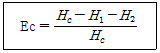
- 전열손실
- 현열손실
- 연료의 저발열량
- 불완전연소에 다른 손실
(정답률: 84%)
20. 고위발열량의 9000kcal/kg인 연료 3kg이 연소할 때의 총저위발열량은 몇 kcal인가? (단, 이 연료 1 kg당 수소분은 15%, 수분은 1%의 비율로 들어있다.)
- 12300
- 24552
- 43882
- 51888
(정답률: 66%)
2과목: 열역학
21. 체적이 3L, 질량이 15kg인 물질의 비체적(cm3/g)은?
- 0.2
- 1.0
- 3.0
- 5.0
(정답률: 63%)
22. 압력 1Mpa, 온도 400℃ 의 이상기체 2 kg이 가역단열과정으로 팽창하여 압력이 500kPa로 변화한다. 이 기체의 최종온도는 약 몇 ℃ 인가? (단, 이 기체의 정적비열은 3.12kJ/(kg·K), 정압비열은 5.21kJ/(kg·K)이다.)
- 237
- 279
- 510
- 622
(정답률: 33%)
23. 랭킨 사이클의 순서를 차례대로 옳게 나열한 것은?
- 단열압축 → 정압가열 → 단열팽창 → 정압냉각
- 단열압축 → 등온가열 → 단열팽창 → 정적냉각
- 단열압축 → 등적가열 → 등압팽창 → 정압냉각
- 단열압축 → 정압가열 → 단열팽창 → 정적냉각
(정답률: 78%)
24. 다음 주 열역학적 계에 대한 에너지 보존의 법칙에 해당하는 것은?
- 열역학 제0법칙
- 열역학 제1법칙
- 열역학 제2법칙
- 열역학 제3법칙
(정답률: 85%)
25. 성능계수가 4.8인 증기압축냉동기의 냉동능력 1kW당 소요동력(kW)은?
- 0.21
- 1.0
- 2.3
- 4.8
(정답률: 54%)
26. 역카르노 사이클로 운전되는 냉방장치가 실내온도 10℃에서 30kW의 열량 흡수하여 20℃ 응축기에서 응축기에서 방열한다. 이 때 냉방에 필요한 최소 동력은 약 몇 kW인가?
- 0.03
- 1.06
- 30
- 60
(정답률: 52%)
27. 이상기체 1kg의 압력과 체적이 각각 P1 ,V1 에서 P2 ,V2 로 등온 가역적으로 변할 때 엔트로피 변화(ΔS)는? (단, R은 기체상수이다.)
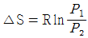
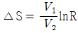
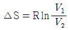
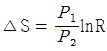
(정답률: 64%)
28. 다음 가스 동력 사이클에 대한 설명으로 틀린 것은?
- 오토 사이클의 이론 열효율은 작동유체의 비열비와 압축비에 의해서 결정된다.
- 카르노 사이클의 최고 및 최저 온도의 스털링 사이클의 최고 및 최저온도가 서로 같을 경우 두 사이클의 이론 열효율은 동일하다.
- 디젤 사이클에서 가열과정은 정적과정으로 이루어진다.
- 사바테 사이클의 가열과정은 정적과 정압과정이 복합적으로 이루어진다.
(정답률: 56%)
29. 다음 주 어떤 압력 상태의 과열 수증기 엔트로피가 가장 작은가? (단, 온도는 동일하다고 가정한다.)
- 5기압
- 10기압
- 15기압
- 20기압
(정답률: 69%)
30. 물의 삼중점(triple point)의 온도는?
- 0K
- 273.16℃
- 73K
- 273.16K
(정답률: 79%)
31. 이상기체가 등온과정에서 외부에 하는 일에 대한 관계식으로 틀린 것은? (단, R은 기체상수이고, 계에 대해서 m은 질량, V는 부피, P는 압력을 나타낸다. 또한 하첨자 “1”은 변경전, 하첨자 “2”는 변경후를 나타낸다.)
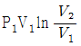
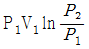
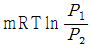
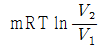
(정답률: 56%)
32. 100℃ 건포화증기 2㎏이 온도 30℃인 주위로 열을 방출하여 100℃ 포화액으로 되었다. 전체(증기 및 주위)의 엔트로피 변호는 약 얼마인가? (단, 100℃에서의 증발잠열은 2257kJ/㎏이다.)
- -12.1 kJ/K
- 2.8 kJ/K
- 12.1 kJ/K
- 24.2 kJ/K
(정답률: 36%)
33. 증기 동력 사이클의 구성 요소 중 복수기(condenser)가 하는 역할은?
- 물을 가열하여 증기로 만든다.
- 터빈에 유입되는 증기의 압력을 높인다.
- 증기를 팽창시켜서 동력을 얻는다.
- 터빈에서 나오는 증기를 물로 바꾼다.
(정답률: 66%)
34. 대기압이 100kPa인 도시에서 두 지점의 계기압력비가 “5 : 2”라면 절대 압력비는?
- 1.5 : 1
- 1.75 : 1
- 2 : 1
- 주어진 정보로는 알 수 없다.
(정답률: 79%)
35. 이상기체의 단위 질량당 내부 에너지 u, 엔탈피 h, 엔트로피 s에 관한 다음의 관계식 중에서 모두 옳은 것은? (단, T는 온도, p는 압력, v는 비체적을 나타낸다.)
- Tds = du - vdp, Tds = dh - pdv
- Tds = du + pdv, Tds = dh - vdp
- Tds = du - vdp, Tds = dh + pdv
- Tds = du + pdv, Tds = dh + vdp
(정답률: 67%)
36. 오존층 파괴와 지구 온난화 문제로 인해 냉동장치에 사용하는 냉매의 선택에 있어서 주의를 요한다. 이와 관련하여 다음 중 오존 파괴 지수가 가장 큰 냉매는?
- R-134a
- R-123
- 암모니아
- R-11
(정답률: 71%)
37. 체적 4m3, 온도 290K의 어떤 기체가 가역 단열과정으로 압축되어 체적 2m3, 온도340K로 되었다. 이상기체라고 가정하면 기체의 비열비는 약 얼마인가?
- 1.091
- 1.229
- 1.407
- 1.667
(정답률: 54%)
38. 다음 중 이상적인 교축 과정(throttling process)은?
- 등온 과정
- 등엔트로피 과정
- 등엔탈피 과정
- 정압 과정
(정답률: 74%)
39. 피스톤이 장치된 용기 속의 온도 100℃, 압력 200 kPa, 체적 0.1m3의 이상기체 0.5kg이 압력이 일정한 과정으로 체적이 0.2m3으로 되었다. 이때 전달된 열량은 약 몇 kJ인가? (단, 이 기체의 정압비열은 5kJ/(kg·K)이다.)
- 200
- 250
- 746
- 933
(정답률: 39%)
40. 그림과 같이 작동하는 열기관 사이클(cycle)은? (단, γ는 비열비이고, P는 압력, V는 체적, T는 온도, S는 엔트로피이다.)
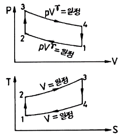
- 스털링(stiriling) 사이클
- 브레이턴(Brayton) 사이클
- 오토(Otto) 사이클
- 카르노(Carnot) 사이클
(정답률: 58%)
3과목: 계측방법
41. 피토관 유량계에 관한 설명이 아닌 것은?
- 흐름에 대해 충분한 강도를 가져야 한다.
- 더스트가 많은 유체측정에는 부적당하다.
- 피토관의 단면적은 관 단면적의 10%이상 이여야 한다.
- 피토관을 유체흐름의 방향으로 일치시킨다.
(정답률: 54%)
42. 온도의 정의 정점 중 평형수소의 삼중점은 얼마인가?
- 13.80 K
- 17.04 K
- 20.24 K
- 27.10 K
(정답률: 58%)
43. 물을 함유한 공기와 건조공기의 열전도율 차이를 이용하여 습도를 측정하는 것은?
- 고분자 습도센서
- 염화리튬 습도센서
- 서미스터 습도센서
- 수정진동자 습도센서
(정답률: 76%)
44. 다음 각 습도계의 특징에 대한 설명으로 틀린 것은?
- 노점 습도계는 저습도를 측정할 수 있다.
- 모발 습도계는 2년마다 모발을 바꾸어 주어야 한다.
- 통풍 건습구 습도계는 2.5~5m/s의 통풍이 필요하다.
- 저항식 습도계는 직류전압을 사용하여 측정한다.
(정답률: 76%)
45. 부자(float)식 액면계의 특징으로 틀린 것은?
- 원리 및 구조가 간단하다.
- 고압에도 사용할 수 있다.
- 액면이 심하게 움직이는 곳에 사용하기 좋다.
- 액면 상, 하 한계에 경보용 리미트 스위치를 설치할 수 있다.
(정답률: 78%)
46. 다음 중 접촉식 온도계가 아닌 것은?
- 저항온도계
- 방사온도계
- 열전온도계
- 유리온도계
(정답률: 80%)
47. 순간치를 측정하는 유량계에 속하지 않는 것은?
- 오벌(Oval) 유량계
- 벤튜리(Venturi) 유량계
- 오리피스(Orifice) 유량계
- 플로우노즐(Flow-nozzle) 유량계
(정답률: 73%)
48. 바이메탈 온도계의 특징으로 틀린 것은?
- 구조가 간단하다.
- 온도변화에 대하여 응답이 빠르다.
- 오래 사용 시 히스테리스시스 오차가 발생한다.
- 온도자동 조절이나 온도 보상장치에 이용된다.
(정답률: 47%)
49. 가스크로마토그래피의 특징에 대한 설명으로 틀린 것은?
- 미량성분의 분석이 가능하다.
- 분리성능이 좋고 선택성이 우수하다.
- 1대의 장치로는 여러 가지 가스를 분석할 수 없다.
- 응답속도가 다소 느리고 동일한 가스의 연속측정이 불가능하다.
(정답률: 68%)
50. 자동제어의 일반적인 동작순서로 옳은 것은?
- 검출 → 판단 → 비교 → 조작
- 검출 → 비교 → 판단 → 조작
- 비교 → 검출 → 판단 → 조작
- 비교 → 판단 → 검출 → 조작
(정답률: 77%)
51. 램, 실린더, 기름탱크 가압펌프 등으로 구성되어 있으며 탄성식 압력계의 일반교정용으로 주로 사용되는 압력계는?
- 분동식 압력계
- 격막식 압력계
- 침종식 압력계
- 벨로즈식 압력계
(정답률: 71%)
52. 보일러의 자동제어 중에서 A.C.C.이 나타내는 것은 무엇인가?
- 연소제어
- 급수제어
- 온도제어
- 유압제어
(정답률: 74%)
53. 화학적 가스분석계인 연소식 O2계의 특징이 아닌 것은?
- 원리가 간단하다.
- 취급이 용이하다.
- 가스의 유량변동에도 오차가 없다.
- O2 측정 시 팔라듐계가 이용된다.
(정답률: 71%)
54. 다음 중 유도단위에 속하지 않는 것은?
- 비열
- 압력
- 습도
- 열량
(정답률: 63%)
55. 자동제어계와 직접 관련이 없는 장치는?
- 기록부
- 검출부
- 조절부
- 조작부
(정답률: 78%)
56. 관리의 유속을 피토관으로 측정할 때 마노미터의 수주가 50cm였다. 이때 유속은 약 몇 m/s인가?
- 3.13
- 2.21
- 1.0
- 0.707
(정답률: 48%)
57. 유량 측정기기 중 유체가 흐르는 단면적이 변함으로써 직접 유체의 유량을 읽을 수 있는 기기, 즉 압력차를 측정할 필요가 없는 장치는?
- 피토 튜브
- 로터 미터
- 벤투리 미터
- 오리피스 미터
(정답률: 72%)
58. 광고온계의 사용상 주의점이 아닌 것은?
- 광학계의 먼지, 상처 등을 수시로 점검한다.
- 측정자간의 오차가 발생하지 않고 정확하다.
- 측정하는 위치와 각도를 같은 조건으로 한다.
- 측정체와의 사이에 연기나 먼지 등이 생기지 않도록 주의한다.
(정답률: 75%)
59. 열전대 온도계의 보호관으로 사용되는 다음 재료 중 사용 사용 온도가 높은 순으로 옳게 나열된 것은?
- 석영관 ＞ 자기관 ＞ 동관
- 석영관 ＞ 동관 ＞ 자기관
- 자기관 ＞ 석영관 ＞ 동관
- 동관 ＞ 자기관 ＞ 석영관
(정답률: 72%)
60. 측정하고자 하는 상태량과 독립적 크기를 조정할 수 있는 기준량과 비교하여 측정, 계측하는 방법은?
- 보상법
- 편위법
- 치환법
- 영위법
(정답률: 54%)
4과목: 열설비재료 및 관계법규
61. 다음 보온재 중 최고안전사용온도가 가장 높은 것은?
- 석면
- 펄라이트
- 폼글라스
- 탄화마그네슘
(정답률: 77%)
62. 에너지이용 합리화법에 따라 냉난방온도의 제한 대상 건물에 해당하는 것은?
- 연간 에너지사용량이 5백 티오이 이상인 건물
- 연간 에너지사용량이 1천 티오이 이상인 건물
- 연간 에너지사용량이 1천5백 티오이 이상인 건물
- 연간 에너지사용량이 2천 티오이 이상인 건물
(정답률: 83%)
63. 중화내화물 중 내마모성이 크며 스폴링을 일으키기 쉬운 것으로 염기성 평로에서 산성 벽돌과 염기성벽돌을 섞어서 축로할 때 서로의 침식을 방지하는 목적으로 사용하는 것은?
- 탄소질 벽돌
- 크롬질 벽돌
- 탄화규소질 벽돌
- 폴스테라이트 벽돌
(정답률: 59%)
64. 에너지이용 합리화법에 따라 산업통상자원부장관은 에너지이용 합리화에 관한 기본계획을 몇 년 마다 수립하여야 하는가?
- 3년
- 5년
- 7년
- 10년
(정답률: 78%)
65. 용광로를 고로라고도 하는데, 이는 무엇을 제조하는데 사용되는가?
- 주철
- 주강
- 선철
- 포금
(정답률: 75%)
66. 노재의 화학적 성질을 잘못 짝지은 것은?
- 샤모트질 벽돌 : 산성
- 규석질 벽돌 : 산성
- 돌로마이트질 벽돌 : 염기성
- 크롬질 벽돌 : 염기성
(정답률: 66%)
67. 다음 중 에너지이용 합리화법에 따라 에너지관리산업기사의 자격을 가진 자가 조종할 수 없는 보일러는?
- 용량이 10t/h인 보일러
- 용량이 20t/h인 보일러
- 용량이 581.5kW인 온수 발생 보일러
- 용량이 40t/h인 보일러
(정답률: 78%)
68. 운요(Ring kiln)에 대한 설명으로 옳은 것은?
- 석회소성용으로 사용된다.
- 열효율이 나쁘다.
- 소성이 균일하다.
- 종이 칸막이가 있다.
(정답률: 72%)
69. 글로브밸브(globe valve)에 대한 설명으로 틀린 것은?
- 유량조절이 용이하므로 자동조절밸브 등에 응용시킬 수 있다.
- 유체의 흐름방향이 밸브 몸통 내부에서 변한다.
- 디스크 형상에 따라 앵글밸브, Y형밸브, 니들밸브 등으로 분류된다,
- 조작력이 적어 고압의 대구경 밸브에 적합하다.
(정답률: 75%)
70. 배관용 강관의 기호로서 틀린 것은?
- SPP : 일반배관용 탄소강관
- SPPS : 압력배관용 탄소강관
- SPHT : 고온배관용 탄소강관
- STS : 저온배관용 탄소강관
(정답률: 69%)
71. 다음 중 연속식 요가 아닌 것은?
- 등요
- 윤요
- 터널요
- 고리가마
(정답률: 56%)
72. 에너지이용 합리화법에 따라 에너지 수급안정을 위해 에너지 공급을 제한 조치하고자 할 경우, 산업통상자원부장관은 조치 예정일 며칠 전에 이를 에너지공급자 및 에너지 사용자에게 예고하여야 하는가?
- 3일
- 7일
- 10일
- 15일
(정답률: 66%)
73. 온수탱크의 나면과 보온면으로부터 방산열량을 측정한 결과 각각 1000kcal/m2·h, 300kcal/m2·h 이었을 때, 이 보온재의 보온효율(%)은?
- 30
- 70
- 93
- 233
(정답률: 60%)
74. 내화 모르타르의 구비조건으로 틀린 것은?
- 시공성 및 접착성이 좋아야 한다.
- 화학성분 및 광물조성이 내화벽돌과 유사해야 한다.
- 건조, 가열 등에 의한 수축 팽창이 커야 한다.
- 필요한 내화도를 가져야 한다.
(정답률: 82%)
75. 다이어프램 밸브(diaphragm valve)의 특징이 아닌 것은?
- 유체의 흐름이 주는 영향이 비교적 적다.
- 기밀을 유지하기 위한 패킹이 불필요하다.
- 주된 용도가 유체의 역류를 방지하기 위한 것이다.
- 산 등의 화학 약품을 차단하는데 사용하는 밸브이다.
(정답률: 79%)
76. 에너지이용 합리화법에 따라 검사대상기기의 적용범위에 해당하는 것은?
- 최고사용압력이 0.⑤MPa 이고, 동체의 안지름이 300mm 이며, 길이가 500mm인 강철제보일러
- 정격용량이 0.3MW인 철금속가열로
- 내용적 0.⑤m3, 최고사용압력이 0.3Mpa인 기체를 보유하는 2종 압력용기
- 가스사용량이 10kg/h인 소형온수보일러
(정답률: 54%)
77. 에너지이용 합리화법에 따라 검사를 받아야 하는 검사대상기기 중 소형온수보일러의 적용범위 기준은?
- 가스사용량이 10kg/h를 초과하는 보일러
- 가스사용량이 17kg/h를 초과하는 보일러
- 가스사용량이 21kg/h를 초과하는 보일러
- 가스사용량이 25kg/h를 초과하는 보일러
(정답률: 79%)
78. 요로의 정의가 아닌 것은?
- 전열을 이용한 가열장치
- 원재료의 산화반응을 이용한 장치
- 연료의 환원반응을 이용한 장치
- 열원에 따라 연료의 발열반응을 이용한 장치
(정답률: 56%)
79. 에너지이용 합리화법에 따라 에너지다소비사업자가 그 에너지사용시설이 있는 지역을 관할하는 시·도지사에게 신고하여야 하는 사항이 아닌 것은?
- 전년도의 분기별 에너지 사용량·제품생산량
- 해당연도의 분기별 에너지사용예정량·제품생산예정량
- 내년도의 분기별 에너지이용 합리화 계획
- 에너지사용기자개의 현황
(정답률: 55%)
80. 에너지이용 합리화법에 따라 에너지다소비사업자에게 에너지손실요인의 개선명령을 할수 있는 자는?
- 산업통상자원부장관
- 시·도지사
- 한국에너지공단이사장
- 에너지관리진단기관협회장
(정답률: 63%)
5과목: 열설비설계
81. 노통 보일러의 수면계 최저 수위 부착 기준으로 옳은 것은?
- 노통 최고부 위 50 mm
- 노통 최고부 위 100 mm
- 연관의 최고부 위 10 mm
- 연소실 천정관 최고부 위 연관길이의 1/3
(정답률: 80%)
82. 증기 및 온수보일러를 포함한 주철제 보일러의 최고 사용 압력이 0.43MPa 이하일 경우의 수압시험 압력은?
- 0.2MPa로 한다.
- 최고사용압력의 2배의 압력으로 한다.
- 최고사용압력의 2.5배의 압력으로 한다.
- 최고사용압력의 1.3배에 0.3MPa를 더한 압력으로 한다.
(정답률: 59%)
83. 수관식보일러에서 핀패널식 튜브가 한쪽 면에 방사열, 다른 면에는 접촉열을 받을 경우 열전달계수를 얼마로 하여 전열면적을 계산하는가?
- 0.4
- 0.5
- 0.7
- 1.0
(정답률: 50%)
84. 순환식(자연 또는 강제) 보일러가 아닌 것은?
- 타쿠마 보일러
- 야로우 보일러
- 벤손 보일러
- 라몬트 보일러
(정답률: 53%)
85. 다음 그림의 용접이음에서 생기는 인장응력은 약 몇 kgf/cm2인가?
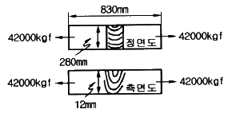
- 1250
- 1400
- 1550
- 1600
(정답률: 53%)
86. 보일러 부하의 급변으로 인하여 동 수면에서 작은 입자의 물방울이 증기와 혼입하여 튀어 오르는 현상을 무엇이라고 하는가?
- 캐리오버
- 포밍
- 프라이밍
- 피팅
(정답률: 73%)
87. 노통 보일러에 두께 13mm 이하의 경판을 부착하였을 때 가셋 스테이의 하단과 노통 상단과의 완충폭(브레이징 스페이스)은 몇 mm 이상으로 하여야 하는가?
- 230 mm
- 260 mm
- 280 mm
- 300 mm
(정답률: 58%)
88. 수관식과 비교하여 노통연관식 보일러의 특징으로 옳은 것은?
- 설치 면적이 크다.
- 연소실을 자유로운 형상으로 만들 수 있다.
- 파열시 비교적 위험하다.
- 청소가 곤란하다.
(정답률: 49%)
89. 전열면에 비등 기포가 생겨 열유속이 급격하게 증대하며, 가열면상에 서로 다른 기포의 발생이 나타나는 비등과정을 무엇이라고 하는가?
- 단상액체 자연대류
- 핵비등(nucleate boiling)
- 천이비등(transition boiling)
- 포밍(foaming)
(정답률: 74%)
90. 보일러의 열정산시 출열 항목이 아닌 것은?
- 배기가스에 의한 손실열
- 발생증기 보유열
- 불완전연소에 의한 손실열
- 공기의 현열
(정답률: 79%)
91. 과열기에 대한 설명으로 틀린 것은?
- 보일러에서 발생한 포화증기를 가열하여 증기의 온도를 높이는 장치이다.
- 저압 보일러의 효율을 상승시키기 위하여 주로 사용된다.
- 증기의 열에너지가 기 열손실이 많아질 수 있다.
- 고온부식의 우려와 연소가스의 저항으로 압력손실이 크다.
(정답률: 44%)
92. 온수보일러에 있어서 급탕량이 500kg/h 이고 공급 주관의 온수온도가 80℃, 환수 주관의 온수온도가 50℃ 이라 할 때, 이 보일러의 출력은? (단, 물의 평균 비열은 1kcal/kg·℃이다.)
- 10000kcal/h
- 12500kcal/h
- 15000kcal/h
- 17500kcal/h
(정답률: 53%)
93. 용접봉 피복제의 역할이 아닌 것은?
- 용융금속의 정련작용을 하며 탈산제 역할을 한다.
- 용융금속의 급냉을 촉진시킨다.
- 용융금속에 필요한 원소를 보충해 준다.
- 피복제의 강도를 증가시킨다.
(정답률: 70%)
94. 보일러 수의 분출 목적이 아닌 것은?
- 물의 순환을 촉진한다.
- 가성취화를 방지한다.
- 프라이밍 및 포밍을 촉진한다.
- 관수의 pH를 조절한다.
(정답률: 77%)
95. 보일러의 노통이나 화실과 같은 원통 부분이 외측으로부터의 압력에 견딜 수 없게 되어 눌려 찌그러져 찢어지는 현상을 무엇이라 하는가?
- 블리스터
- 압궤
- 팽출
- 라미네이션
(정답률: 84%)
96. 스팀 트랩(steam trap)을 부착 시 얻는 효과가 아닌 것은?
- 베이퍼락 현상을 방지한다.
- 응축수로 인한 설비의 부식을 방지한다.
- 응축수를 배출함으로써 수격작용을 방지한다.
- 관내 유체의 흐름에 대한 마찰 저항을 감소시킨다.
(정답률: 54%)
97. 스케일(scale)에 대한 설명으로 틀린 것은?
- 스케일로 인하여 연료소비가 많아진다.
- 스케일로 규산칼슘, 황산칼슘이 주성분이다.
- 스케일로 인하여 배기가스의 온도가 낮아진다.
- 스케일은 보일러에서 열전도의 방해물질이다.
(정답률: 77%)
98. 보일러의 일상점검 계획에 해당하지 않는 것은?
- 급수배관 점검
- 압력계 상태점검
- 자동제어장치 점검
- 연료의 수요량 점검
(정답률: 71%)
99. 열교환기의 격벽을 통해 정상적으로 열교환이 이루어지고 있을 경우 단위시간에 대한 교환열량 q(열유속, kcal/m2·h)의 식은? (단, Q는 열교환량(kcal/h), A는 전열면적(m2)이다.)
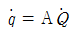
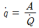
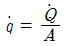
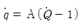
(정답률: 65%)
100. 10kg/cm2의 압력하에 2000kg/h로 증발하고 있는 보일러의 급수온도가 20℃ 일 때 환산증발량은? (단, 발생증기의 엔탈피는 600kcal/kg이다.)
- 2152kg/h
- 3124kg/h
- 4562kg/h
- 5260kg/h
(정답률: 34%)